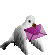
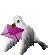

I am a visual artist, heres my commission info. My art socials are the following: art blog, instagram, toyhouse, creatorspring.
Support me & my work on kofi !
My other socials include: main blog.

I block people such as "proshippers", pedophiles, TERFs, transmeds, racists, bigots in general, endogenic systems and their supporters. Id rather not have any of them interact with my content At All.
If youre under the age of 16 I would avoid following me on any of my socials, though I dont post 18+ content, I do post suggestive art sometimes.
call me Chaqui
nicknames or variations are awesome
18 y/o. She/Her, It/Its
faggy butch bisexy trans person-woman-guy-something
mixed chilean latina. Indigenous + White
autistic, psychotic & otherstuff
 Taken by Lammy 

Check out my Artwork Diary
View my Vaporeon Shrine


I speak Spanish & English, and am slowly learning Mapudungún, Polish, Japanese, Portuguese, amongst other languages.
Im alright with people calling me dude/guy/bro, just dont call me a man or masculine terms. Thumbs Up!
B.T.W. you can also call me by my sona's names. I dont mind! Its silly Its nice Its fun for everyone
I have terrible memory due to health conditions, so Im sorry if I ever forget something, I mostly do remember names & definitely remember important information but there still might be things I cant remember fully, hope its understandable.


My main interests include: Zatch Bell, JJBA, Bobobo, YugiOh:DM, Mashin Eiyuuden Wataru, DoroHeDoro, Transformers, Inscryption, Soulsborne, Metal Gear Solid, Parappa the Rapper/Um Jammer Lammy, Pokemon, Ib, Slasher Movies, General Horror (films/games/books), Biology (especially Taxonomy/Phylogeny, Arthropods, Entomology, Mycology, and Pallas cats), SM64 soundfont covers and other miscalleanous stuff.


I also like music like Lauren Bousfield, Osamu Sato, Psychedelic Porn Crumpets, King Crimson, Electric Light Orchestra, Jun Togawa, bôa, Talking Heads, Oingo Boingo, of Montreal, BUCK-TICK, Marina, Crush 40, Dope, System of a Down, Linkin Park, Limp Bizkit, Aphex Twin, MF DOOM and a bunch of video game soundtracks
Theres a lot more that I wont list because it really is a lot. if youre curious and want to know, send an ask ! music recommendations are more than welcome too.


Special Thanks to Rita for helping me out with this page's code !

(Site subject to changes ! Any suggestions welcome)
"In a way, you are poetry material; you are full of cloudy subtleties I am willing to spend a lifetime figuring out. Words burst in your essence and you carry their dust in the pores of your ethereal individuality."
-Franz Kafka (Letters to Milena)